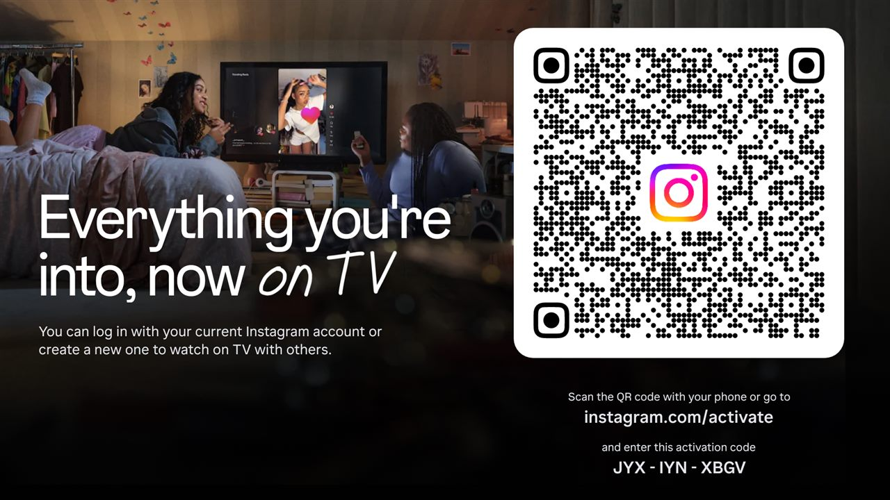
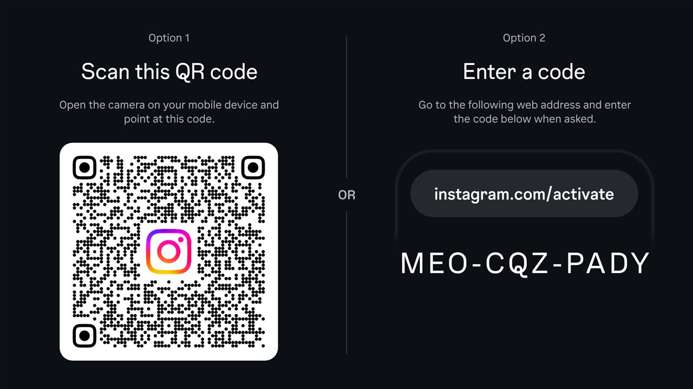
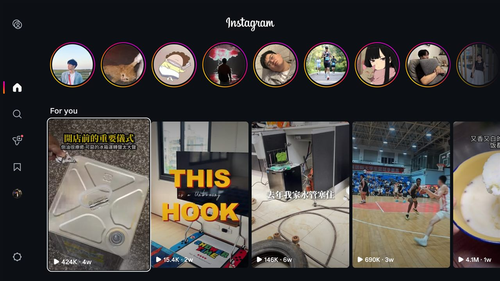

A 20-minute experiment to find out whether the region lock is a real geo-block, or just a Play Store label.
In February 2026, Instagram shipped an official app for Google TV — package name com.instagram.airwave — so you can watch Reels on the big screen. There's just one catch: it's US-only. In Taiwan it doesn't even appear in the Play Store.
But "not in the Play Store" and "won't work" are two different claims. Is the region lock a real, technical geo-block — or just a listing restriction on the store page? There's one way to find out: sideload it and see.
Personal, educational curiosity. Not affiliated with or endorsed by Instagram or Meta. Sideloading third-party APKs carries its own risks — do it at your own discretion.
I grabbed the APK from APKMirror. The one detail that actually matters: match your device's CPU architecture. My 2020 Chromecast with Google TV runs a 32-bit Android userspace, so only the armeabi-v7a build installs — the arm64-v8a one fails with INSTALL_FAILED_NO_MATCHING_ABIS. Check yours first:
adb shell getprop ro.product.cpu.abilist
# → armeabi-v7a,armeabi (so: pick the armeabi-v7a APK)With wireless debugging on, it's two commands:
adb connect <tv-ip>:<port>
adb install com.instagram.airwave.apk # → SuccessInstalled cleanly. No complaints, no region check at install time.
This is the moment of truth. Instead of a "not available in your country" screen, the app went straight to the login screen: "Everything you're into, now on TV."

There's no password field on the TV. Like YouTube's TV login, it's a QR / device-activation flow: scan the QR with your phone, or go to instagram.com/activate and type the short code shown on screen. Your already-logged-in phone does the actual authentication.

After approving on the phone, the TV loaded the complete native app — a stories row, a "For you" grid of Reels, real content with real view counts. Everything served normally. Zero region friction, front or back end.

Verdict: "US-only" is a Play Store listing restriction, not a technical geo-block. Sideload the APK, activate with a real account, and you get the full official experience outside the US.
And honestly? This is exactly why I'd already built a scrappy WebView-wrapper Reels app for the same TV — because before this experiment, "the official app is US-only" felt like a wall. Turns out it was a low fence. But the wrapper was a fun weekend build anyway.
Half of my "it's broken, the screen is black!" panics during this were just the Chromecast's display being asleep. A screenshot came back solid black; dumpsys power said mWakefulness=Asleep. One adb shell input keyevent KEYCODE_WAKEUP and everything was fine. Always check the boring thing first.